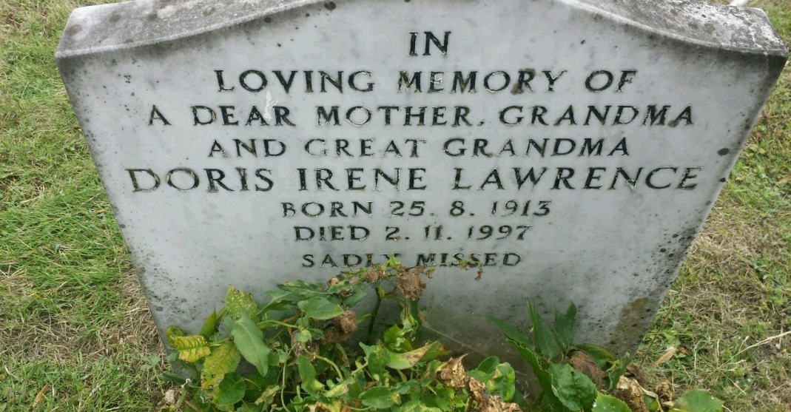

Doris Irene Lawrence (née Revell) 1913 - 1997
[ Home ] | [ Calendar ] | [ Surnames Index ] | [ Census Index ] | [ Family History ]Doris Revell, the wife of Edward Douglas Lawrence (the first cousin once-removed on the mother's side of Nigel Horne), was born in Thanet, Kent, England on Aug 25, 19131,2,3,4 and. She married Edward (with whom she had 3 surviving children Leonard D, Raymond T and Sylvia G) in Thanet around Aug 19345. On Sep 29, 1939, she was living at St James Avenue, Ramsgate, Kent, England1.
She died on Nov 2, 1997 in Thanet3,4 and was buried on Minster Cemetery, Tothill Street, Minster in Thanet after Nov 2, 1997.
Citations
- 1939 Register - Findmypast (was recorded at this address)
- England & Wales births 1837-2006 - Findmypast
- England & Wales deaths 1837-2007 - Findmypast
- England Billion Graves cemetery index - Findmypast
- England & Wales Marriages 1837-2005 - Findmypast
Media
Doris Irene Revall - headstone

England & Wales deaths 1837-2007 - BMD/D/1997/11/82043041
England Billion Graves cemetery index - US/BMD/BILLION/5/000028459926
England & Wales births 1837-2006 - BMD/B/1913/3/AZ/001142/103
England & Wales marriages 1837-2005 - BMD/M/1934/3/AZ/001300/092
1939 Register Image - TNA-R39-1765-1765A-018
1939 Register - TNA-R39-1765-1765A-018-01
Family Tree

Generated by ged2site. Last updated on Jun 11, 2024